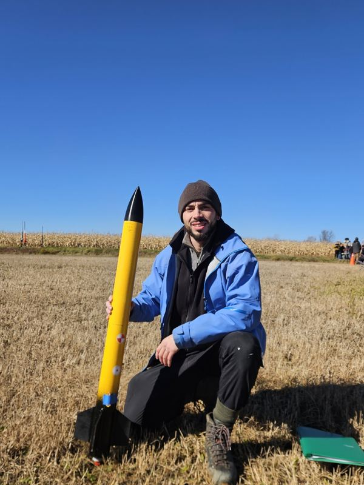
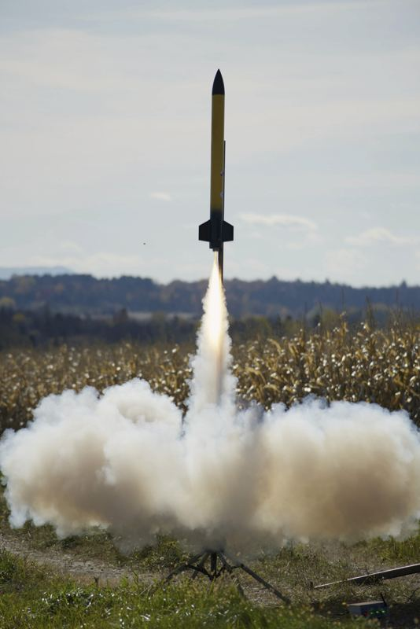
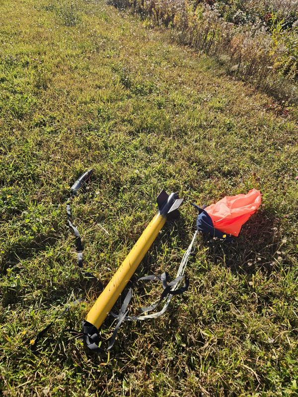
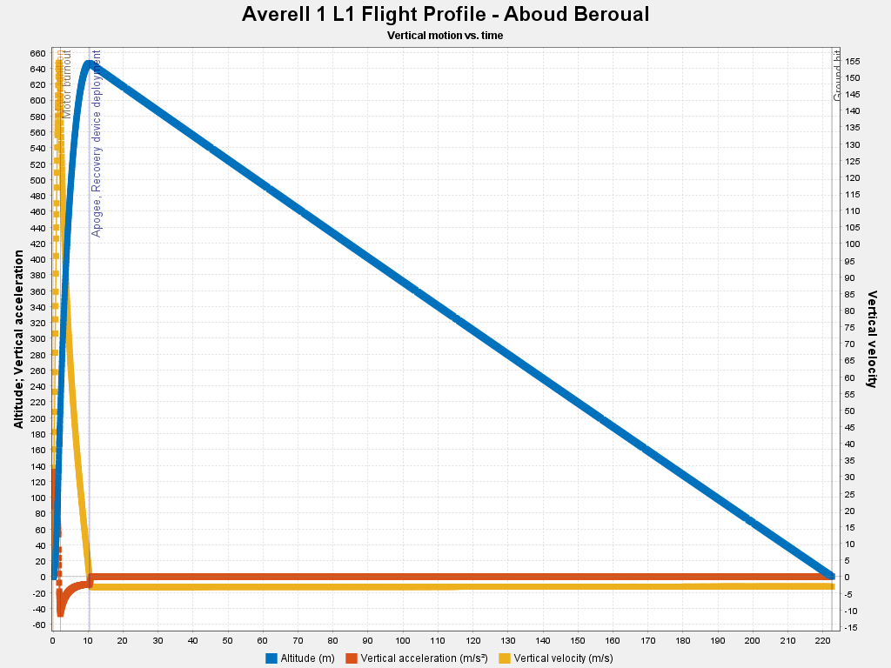

- Personal project
- October 2026
- Flown
High-power rocketry: Level 1 certification flight
I designed, built and flew a high-power rocket to earn my Level 1 certification. It reached 2,100 ft and came back intact.
- 2,100 ft
- apogee
- H135
- motor
- Level 1
- high-power certification
Tech stack
- OpenRocket: flight simulation and stability for a windy day
- SolidWorks and Onshape: fins, bulkhead, motor retainer and nosecone
- PETG 3D printing, laser-cut plywood, epoxy assembly

More photos, figures and details
The build, from the parts table to the recovery field

Parts Everything laid out before assembly: body tube, PETG-printed nosecone, and laser-cut plywood fins and bulkhead. 
Fin can Plywood fins and motor tube assembled on the 3D-printed fin can. 
Assembled The airframe together and standing in the workshop, before paint. 
Painted Yellow and black, in the spray booth. On the field At the Ciel d’Octobre launch. 
Launch Leaving the pad on an H135 motor, 18 October 2026. 
Recovered Found in the grass with the parachute attached. Intact.



Design and certification
- Simulated the flight in OpenRocket and tuned stability for a windy launch day.
- Designed the fins, bulkhead and motor retainer in SolidWorks and the nosecone in Onshape. Printed the nosecone and motor retainer in PETG, laser-cut the fins and bulkhead from plywood, and assembled the airframe with epoxy.
- Earned Level 1 High-Power Rocketry certification after passing the Transport Canada and Canadian Association of Rocketry (CAR) exams. Member of CAR and CQF.
OpenRocket, SolidWorks, Onshape, PETG 3D printing, laser cutting, epoxy assembly